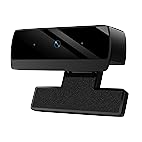
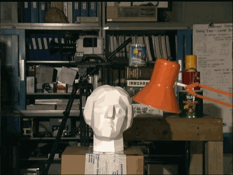
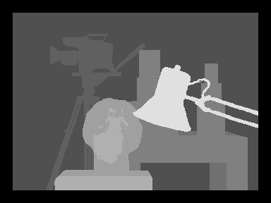
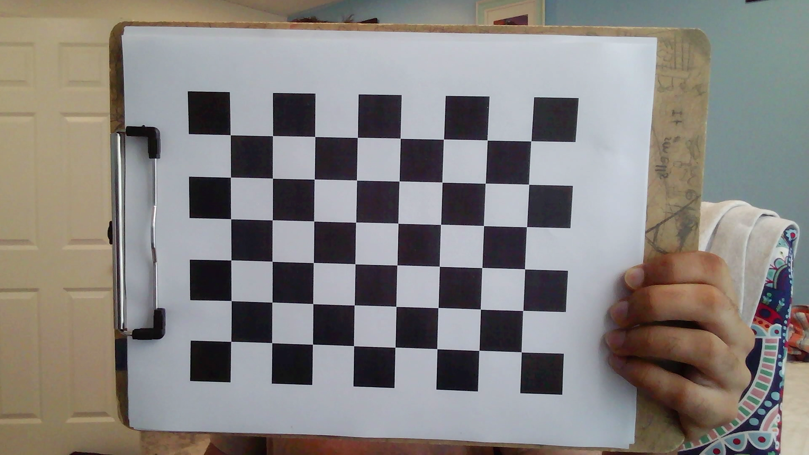
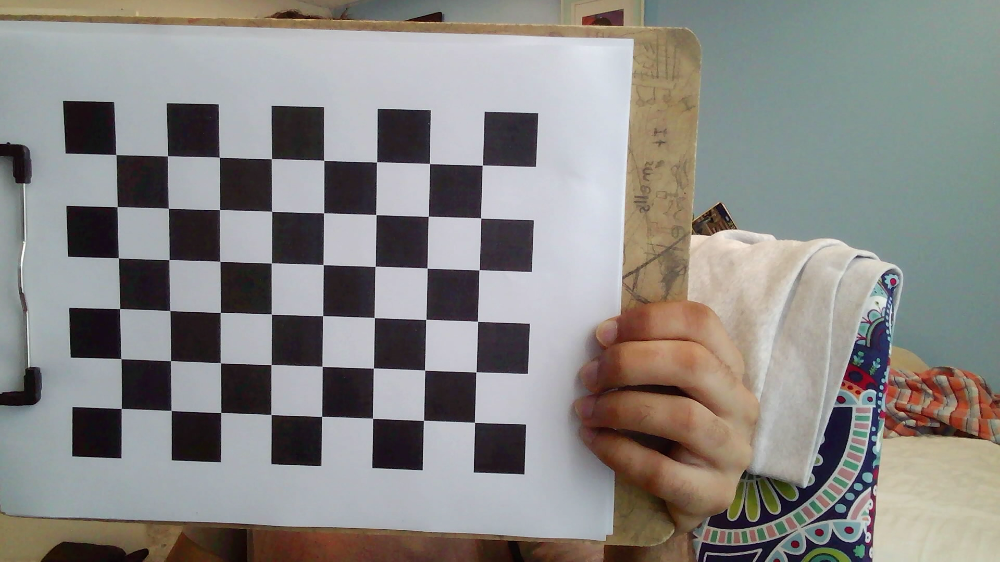
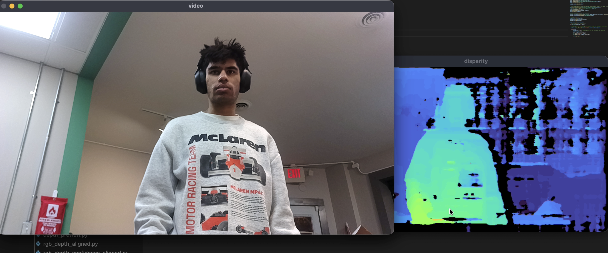
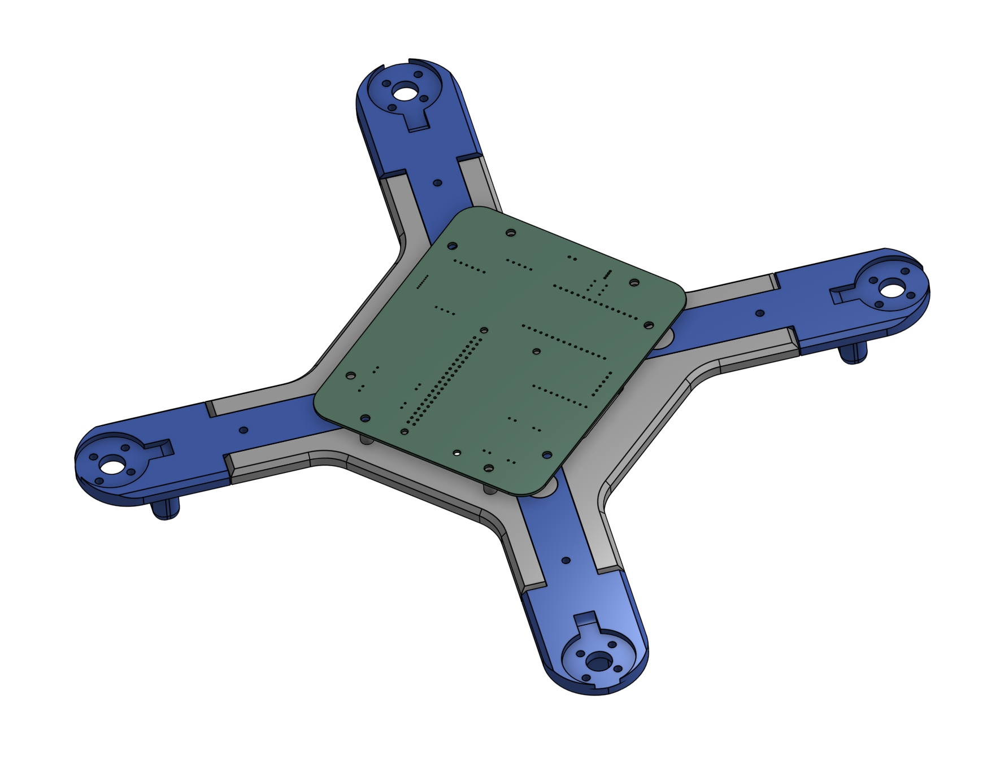
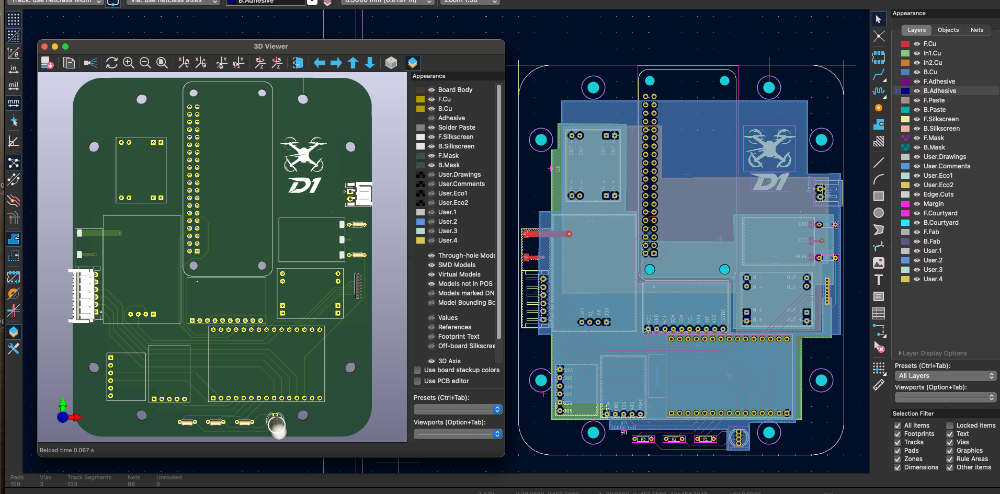

Computer Vision: Stereo Depth Estimation System
Problem Statement
Developed a real-time stereo vision system for accurate depth estimation and 3D reconstruction, addressing challenges in autonomous navigation and robotics applications.
Technical Implementation
Engineered a comprehensive stereo vision pipeline utilizing block matching algorithms (StereoSBM and StereoSGBM) for disparity mapping. The system processes synchronized stereo camera feeds to generate precise depth maps in real-time.

Key Engineering Solutions:
- Camera Calibration: Implemented intrinsic and extrinsic parameter calibration using checkerboard patterns to correct lens distortion
- Image Rectification: Applied epipolar geometry principles to align stereo image pairs for accurate disparity calculation
- Hardware Optimization: Designed and 3D-printed custom camera housing for precise horizontal alignment, minimizing pixel-level misalignment
- Algorithm Comparison: Benchmarked performance using Middlebury 2001 stereo dataset for validation




Engineering Challenges Overcome:
Noise Reduction: Low-cost cameras introduced significant noise affecting algorithm accuracy. Implemented advanced filtering techniques and iterative calibration processes to achieve sub-pixel accuracy alignment. Currently developing Kalman filter integration for enhanced noise suppression.
Results & Applications:
Successfully generated accurate depth maps with applications in autonomous vehicle navigation, drone obstacle avoidance, and real-world 3D scene reconstruction. The system demonstrates real-time processing capabilities suitable for embedded robotics applications.

Experimental Direction
I'm actively exploring a multi-lens, multi–focal length camera arrangement to replicate the perception system used in Tesla's vision-only self-driving stack. The goal is to combine overlapping fields of view at different focal lengths to improve long-range object detection while maintaining accurate short-range depth through stereo disparity. This includes synchronized capture, cross-camera calibration, and fusion strategies to align outputs across lenses with different intrinsics.
Autonomous Drone Navigation System
Project Objective
Designing and building a fully autonomous drone system from scratch, integrating custom flight controller hardware with advanced computer vision for autonomous navigation in complex environments.



Systems Engineering Approach
Hardware Design & Manufacturing:
- Mechanical Design: Engineered complete airframe using Onshape and Autodesk Inventor with aerodynamic optimization
- PCB Development: Designed custom flight controller PCB using KiCAD, integrating power management and sensor interfaces
- Component Integration: Selected and integrated brushless motors, ESCs, and sensors for optimal performance
Embedded Systems Architecture:
- Real-time Control: ESP32 microcontroller for low-latency sensor data acquisition and flight control
- Computer Vision Processing: Raspberry Pi for stereo vision processing and object detection algorithms
- Sensor Suite: MPU-9250 (9-DOF IMU), GPS, barometric pressure sensor for comprehensive state estimation
Technical Challenges & Solutions:
Sensor Fusion: Implementing Kalman filtering algorithms to combine IMU, GPS, and barometric data while mitigating vibration noise and sensor drift. Developing custom noise models specific to rotorcraft dynamics.
Control Systems Implementation:
- Flight Control: Multi-loop PID controllers for attitude, altitude, and position control
- Navigation Algorithms: SLAM implementation for real-time mapping and localization
- Path Planning: A* and RRT algorithms for optimal trajectory generation in obstacle-rich environments
- Obstacle Avoidance: Integration of stereo vision depth data for dynamic collision avoidance
Current Development Status:
Hardware Complete: Flight controller assembly finished, currently in PID tuning phase for initial flight testing. Software integration of vision system with flight control in progress.
Next Phase: System integration testing, flight envelope characterization, and autonomous mission validation.
Engineering Skills Demonstrated:
- End-to-end product development from concept to prototype
- Cross-disciplinary integration of mechanical, electrical, and software systems
- Real-time embedded programming and hardware-software co-design
- Advanced control theory application and system identification
- Computer vision algorithm implementation and optimization
Garage Parking Assistant
Project Overview
Developed a smart garage parking assistant using sensors and real-time feedback to help drivers park safely and efficiently.